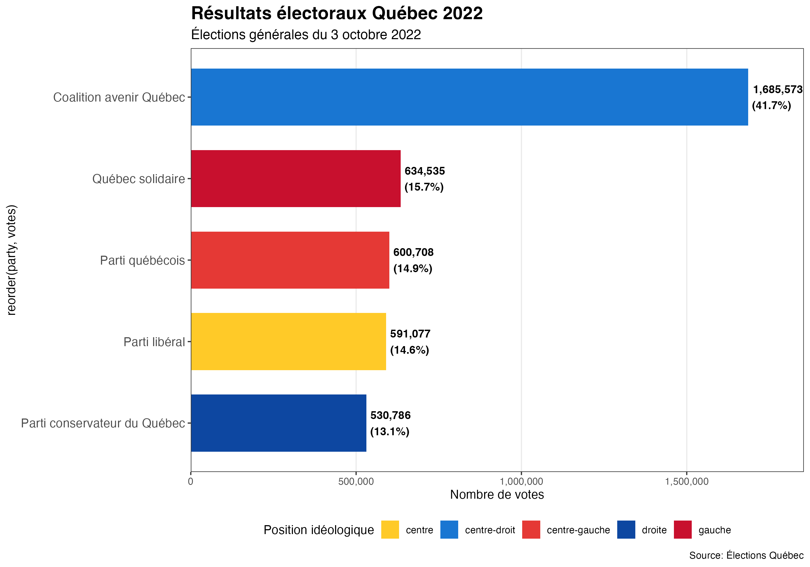

Marc-Antoine
S. Dupuis
Master's student in Political Science at Laval University, student researcher at the Center for Public Policy Analysis, and reserve soldier in the logistics branch of the Canadian Armed Forces. I focus on Canadian and Quebec public policies, as well as social and economic issues.

Quebec, Canada
Master's in Political Science, Laval University
Student researcher, Center for Public Policy Analysis
Reserve soldier, logistics, Canadian Armed Forces
Research focus
Canadian and Quebec public policies, social and economic issues.
Analysis of Canadian census data.
Dynamics of social stratification in Quebec.
Selected projects

Quebec General Elections (2018-2022)
Interactive map and analysis of Quebec's general election results for 2018 and 2022.
Explore the mapProfesseur Datagotchi
A RAG chatbot that answers, in the voice of Professeur Datagotchi, questions about what Quebec's five party leaders said in interviews ahead of the 2026 general election.
Chat with the botGet in touch
CV, professional profile, and source code are available below.